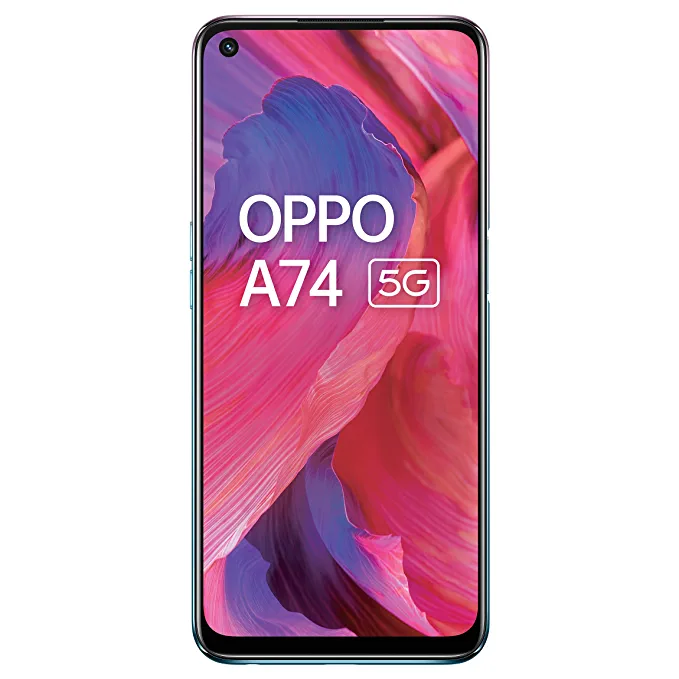

Welcome To 'Buy But Own It'

*Specifications :
Brand - Oppo
Model Name - A74 Fantastic Purple
Network Service Provider - Unlocked for All Carriers
OS - Android 11
Cellular Technology - 5G
*About The Phone :
6.49" Inch 16.5cm FHD+ Punch-hole Display with 2400x1080 pixels. Larger screen to body ratio of 90.5%.Side Fingerprint Sensor
Qualcomm Snapdragon 480 5G GPU 619 at 650 MHz Support 5G sim Powerful 2 GHz Octa-core processor, support LPDDR4X memory and latest UFS 2.1 gear 3 storage
5000 mAh lithium polymer battery
48MP Quad Camera 48MP Main + 2MP Macro + 2MP Depth Lens 8MP Front Camera
Memory, Storage & SIM: 6GB RAM 128GB internal memory expandable up to 256GB Dual SIM nano+nano dual-standby 5G+5G. Color OS 11.1 based on Android v11.0 operating system
Connector type: USB Type C
Display type: LCD